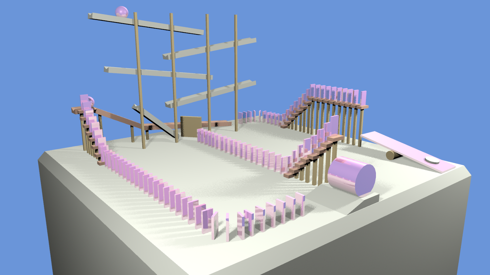

Computer Animation
Spring 2017
Due 4/11/2017
My Rube Goldberg Machine exists only to flip a coin. When I came up with my initial layout, I had heard that dominoes taxed systems very badly, so while I wanted some, I limited their involvement. My crudely-done initial layout is below:
While all the elements of my final Rube Goldberg Machine make an appearance in my initial layout, I ended up adding some duplicated elements in different places to make the machine more complex. I also ended up rearranging the machine to make it easier to follow when watching from a fixed camera position.
The first element of my Rube Goldberg Machine is a series of ramps that a ball rolls down. Despite my best efforts to make the ball roll faster, it moves incredibly slowly down this initial part.
The second bit is made up of dominoes on a level plane. I'm happy with the way these dominoes move. Two similar sections are found elsewhere in the machine.
Third, there is a staircase that the dominoes ascend. It took a lot of trial and error to figure out a height that was tall enough to justify its inclusion but short enough to actually work. Two other staircases appear in my machine.
Next is the rolling cylinder. This too required a fair bit of adjustment to make it move correctly when the domino falls onto it. I used a raised platform to ensure that it has the momentum to knock over the next dominoes.
The next unique part of my machine is the slide for the ball. This was surprisingly difficult to pull off - the ball seemed to want to come to a stop on the slide, and it very often failed to reach the dominoes it was supposed to knock over.
The last unique component in my machine was the level that used a domino to launch the coin into the air. Unlike most other parts of my machine, this worked right away.
I experienced limitations because of my hardware in this project. Because I'm doing all of my animation and rendering on a tablet, render times were completely unreasonable, particularly for the timeframe of this assignment. In addition, my file has become terribly unstable; whenever I open the scene, the framerate turns into a slideshow, and it becomes almost impossible to edit the scene. Because of this, I didn't get a chance to render the scene out. I did render the below frame to show the quality of lighting and materials I chose.
